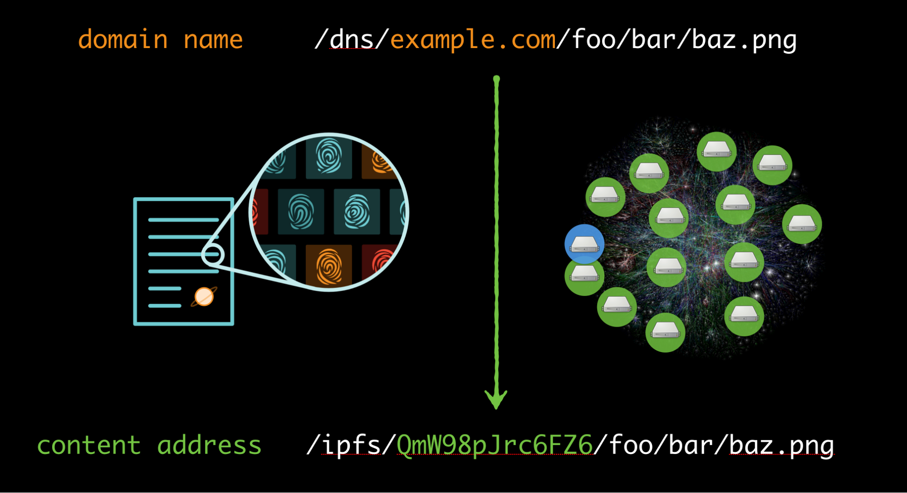
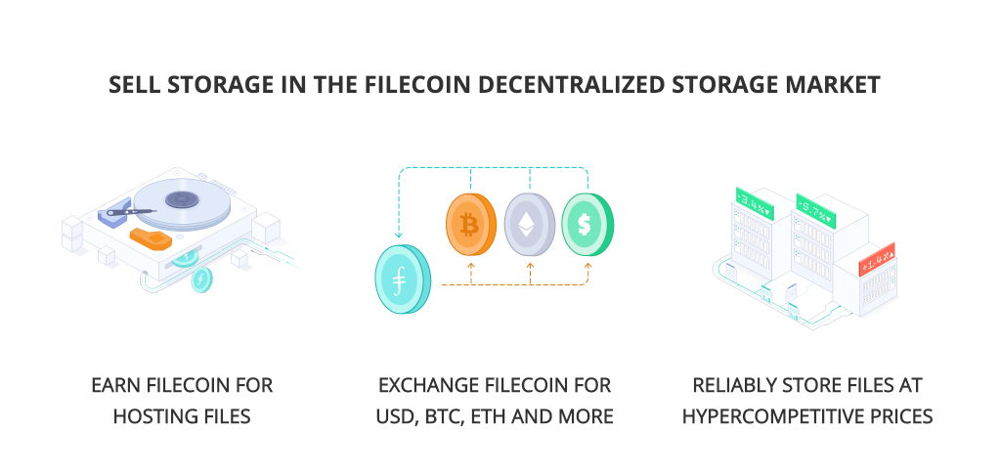
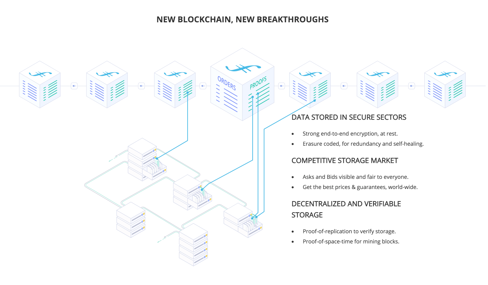
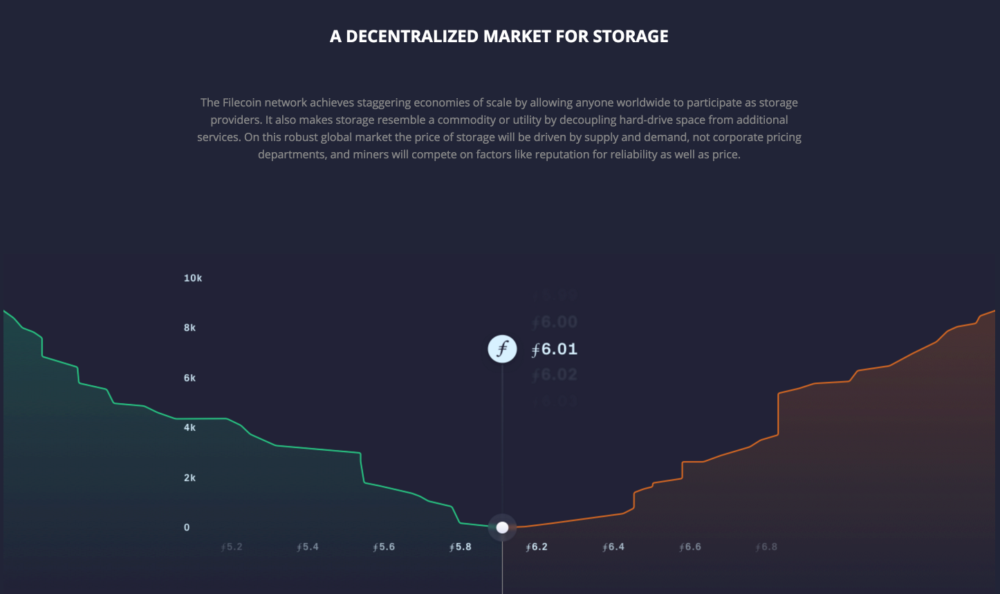

Blog
Why is decentralized and distributed file storage critical for a better web?

The team behind IPFS and Filecoin explain how advances in distributed data storage and strong alignment of market incentives are combining to create a much more secure and efficient web.
In the span of less than three decades the web has become one of the greatest achievements in human history, responsible for never before seen gains in science, technology, and commerce. This amazing growth has been driven in large part by technologists abstracting away much of the underlying complexity of the internet. One of the biggest of these abstractions has been centralized ‘cloud storage’ where data is stored in large, centralized silos owned and run largely by for-profit corporations. This architecture makes the web brittle, undermines privacy, allows the price of storage to remain artificially high, and creates bottlenecks that prevent innovative new uses of data.
The web need not be structured this way. Emerging new technologies are allowing us to improve the web’s underlying protocols by addressing content by what it is rather than addressing it by where it is. This makes the web a much safer and robust place, where we’re far less reliant on any one particular entity to give us the data we request. Now instead of relying on expensive businesses to store and transmit humanity’s trove of knowledge we can distribute data across a vast network of peers who are paid to store each other’s data.
Decentralized Storage makes the web robust and resilient
Today, information on the internet is addressed by location: a particular piece of content has a URL—a Universal Resource *Locator*—that involves the IP Address of a web server that hosts the content at a specific location. For example, to go to a URL like https://facebook.com/mypicture.jpg, we resolve the domain name (facebook.com) into an IP Address (eg 31.13.70.36) and look up the picture there. The URL is saying “go to 31.13.70.36 and request the content at the path “/mypicture.jpg”. The URL always points to that location. If the same picture was hosted on another site, or even your own computer, you would still have to connect to that IP Address and download the content.
It’s useful to think about this in everyday human context. Imagine that we could only reference books by the physical location of a copy, not by title, or author, or ISBN – only the location of the physical object. So if someone told you to read a book, they’d say something like “Hey, you should read this great book, it’s at the New York Public Library, section 9, bookcase 3, top shelf, first from the left”. And now you have to check there, and get that one physical copy. Until you do, you don’t know what book it actually is; you only have the location. This is obviously terribly inefficient. It’s also a precarious situation—what if someone moved the book? What if the library is closed that day? Or totally shut down? Or, what if you get there, you get to Bookcase 3, top shelf, first from the left, and you realize, this whole time, you had another copy of that same book in your backpack.
This isn’t just a theoretical concern. A recent Harvard-led study found that 49% of all hyperlinks cited in US Supreme Court opinions are no longer working. The opinions point to locations that held the correct content at some time in the past, but the content is no longer available at that location. This is brittle, inefficient, and unnecessary. This is madness.
Instead, consider a different way. Consider addressing information by what it is, not where it is. To do this we need to use a different kind of web link. Instead of using links that point to locations, we need links that uniquely describe the content itself, like a fingerprint. This content-addressed approach separates “what” from “where”, so data can flow through the network, so it can be stored and served from anywhere by anyone. To create these content-addressed links, we use the content’s cryptographic hash as the unique identifier or fingerprint.

IPFS, the InterPlanetary File System, is a protocol that lets us use those content-addressed links to exchange data. In IPFS, the hash fingerprint of a file or a piece of data is its address. We use these fingerprints to identify the content instead of using the physical location of the server. This way, when you are trying to load a file, you retrieve it from any place you can. If the file is already on your own computer you could retrieve it from there. If your direct neighbors in the network have the file you could retrieve it from them. You might get it from the original server, from others in the network, whomever. IPFS handles this all for you using efficient routing algorithms to search the network, and it can be tuned for privacy: e.g. only request data from peers you trust. This is similar to what other peer-to-peer systems do, but greatly amplified. You can use it to exchange any kind of files or data with any number of peers and it’s built directly into the web.
IPFS decentralizes the web by addressing information based on what it is, not where it is. This decentralized pattern lets web applications work in local networks disconnected from the original source, whether it is a chat room in an office that lost its uplink, a scientific paper hosted in a variety of libraries, Wikipedia in a remote village with poor connectivity, or a family’s chat messenger during a crisis. It strengthens our digital information, making the data resilient to failures in the underlying internet, securing it cryptographically, and giving it permanence through time. You or the people whom you’ve shared your data with can save copies of information and count on the same links for years. IPFS allows file storage on the web to be decentralized, but a second question remains: how can we create an open, competitive market for providing that storage?
Cloud Storage and the dangers of centralization
Since its inception cloud data storage has evolved to be functional, but leaves many economic and security concerns unaddressed. In order to understand why cloud storage is currently expensive and precarious it’s useful to examine its evolution over time.
The earliest websites and online services ran their own web servers: computers and hard-drives dedicated to serving content to their users. Before an online business could sign-up their first customer or sell their first product, they’d have to invest formidable sums of money and time in setting up server infrastructure. Even if the product or service was completely unrelated to computing and data storage virtually everyone was forced to invest and run their own hardware just to have a web-presence. This was expensive, wasteful, and time-consuming.
In 2006, Amazon.com addressed this wasteful overhead, and boldly launched Amazon Web Services (AWS). AWS removed the need for developers to create and manage their own server infrastructure by renting out Amazon’s own servers and storage space to others. Now for a modest fee a company could easily store and serve their files from Amazon, negating the need for that company to buy their own hardware. AWS became a quick hit and several other large technology firms followed suit in creating their own ‘cloud’ based storage solutions.
Cloud storage allowed new online businesses to spring up overnight and grow to match user demand quickly. Instead of ordering new hard-drives and installing them in their own small data-centers, cloud computing allowed businesses to scale up at a moment’s notice with a few keyboard strokes. In just a few years cloud computing became so useful and popular that the majority of all data became stored in just a few of these cloud data-providers. This infrastructure is still largely invisible to the end-user, even though most websites today are hosted by these 3rd party providers. For example, did you know that Netflix, the popular movie streaming app, actually uses AWS for much of their hosting needs? Even though Amazon has its own rival movie streaming service (Amazon Prime) they’re also happy to sell hosting space to a competitor.
Currently, building a successful cloud data storage business is extraordinarily complex and challenging. Even to begin to be competitive with incumbents a company would need to build a global network of data-centers in every continent (most players in this market have multiple datacenters per continent), build out robust user interfaces that satisfy many user demands, grow global sales and marketing teams to attract customers, and hire large customer support teams. These tremendous barriers to entry have resulted in just a few massive corporations owning nearly all of the global cloud data storage market. This consolidation is especially painful for a number of reasons: users must trust these large corporate actors to protect their data from exposure, the cost of switching cloud providers is especially high, data is stored very far from the end-user (usually hundreds to thousands of miles away), and providers are incentivized to lock in their customers and extract a premium. The current market for cloud storage is not nearly as competitive or efficient as it could be and end-users suffer because of it.
Even more frustrating, there exists a significant amount of ‘latent’ (available) storage throughout the world that sits unused. This storage is owned by all kinds of entities: large corporations down to small family businesses, individuals with huge hard-drive racks in their basements to small drives in everyone’s laptop. However, due to the aforementioned barriers to entry it would be difficult for any one particular company or individual to monetize their extra space and start a cloud data service. A much more efficient market would decouple raw hard-drive space, e.g. the storage, from all the services and support on-top, e.g. the customer service, user interface, payments and price negotiation, etc.. This would allow for a diverse and dynamic market of hard-drive providers to focus only on hardware and compete in a proper market for storage itself, which would greatly reduce the price of cloud storage and allow vast monetization of existing capacity. It would make cloud storage more like a commodity or a utility that you buy as you need at the going market rate and less like a service relationship fraught with contracting, negotiation, transaction, and lock-in costs. But the question remains, how can we build a true decentralized storage ecosystem? Content addressing is solved by IPFS, but how can we encourage people all over the world to become the backbone of storage itself? Enter Filecoin.
Filecoin: Paying the network to store your data
While IPFS lets us exchange data directly with our peers instead of relying on centralized hosts, Filecoin takes it a step further by giving us a way to pay each other for storing data. Filecoin is a decentralized file storage network and protocol token (‘token’ is used interchangeably with ‘appcoin’ and ‘cryptocurrency’). Think of it like the AirBnB data storage. On the supply side — the mining side of the token — individuals and organizations with unused storage space can add their disks to the Filecoin Network and receive client orders. On the demand side — the clients — individuals and organizations hire the Filecoin Network to store their data, which gets routed to many different miners worldwide.
Filecoin draws from cutting-edge advances in cryptography and blockchain technologies to make this holy grail a reality. It uses: a blockchain, a native cryptocurrency, publicly verifiable proofs-of-storage, storage contracts with collaterals, algorithmic markets to ensure efficient pricing, payment channels to enable micropayments and reduce transaction costs, and more. All this adds up to a powerful, decentralized, self-healing network that can bring together massive amounts of storage from “miners” all over the world, and provide a great service with strong guarantees of availability, resilience, and great price. It can automatically rebalance itself to meet demand, protects content from attack, and recovers from miners going offline.

The world has a gargantuan amount of unused storage across thousands of entities and millions of people. By bringing all that latent supply into the market, Filecoin might cause the price of online storage to drop significantly. Moreover, Filecoin kicks off the powerful optimization process that made Bitcoin amass enormous quantities of computing power. Filecoin miners can make a lot of money by adding more and more storage to the network.
Users aren’t required to use Filecoin and IPFS together, but the two combined are a perfect pair that solve significant failings of the current web. Users currently using IPFS are required to ‘pin’ (store & serve) their data from either their own computer, an existing centralized cloud provider, or off the generosity of other IPFS users who actively choose to host that content. Filecoin provides the incentive for any IPFS user to assure their data is stored across a host of decentralized nodes. Soon anyone will be able to pay a large mass of decentralized storage providers in filecoin to robustly store their files, assuring their data can be securely and quickly served to those that request it. Users storing files on IPFS and Filecoin will benefit from optimized storage costs, a diversity of storage providers, much faster serving of data, automated self-healing, and tremendous economies of scale.

Protecting Privacy and Decency on the Decentralized Web
Storing private data on a network powered by IPFS and Filecoin means that parts of the data may be distributed across many computers operated by complete strangers; remarkably, however, this can be better for privacy than existing cloud systems. Today, a large variety of cloud storage providers, big and small, store their users’ data entirely in the clear—unencrypted. Even some who have added encryption-at-rest, have done so by controlling their users’ encryption keys, instead of creating truly “oblivious” or “zero-knowledge” systems. This is a dangerous arrangement because it means that customer data can be stolen and leaked or sold by hackers or other attackers. Users (or the applications they use) should encrypt their data end-to-end before giving it to these cloud storage providers, whether centralized or not.
Distributing user data to a large array of storage computers who are not owned by one company or service can increase the exposure of the data. However, if valuable data is stored end-to-end encrypted, then attackers with access to the encrypted texts cannot learn what is inside them. This is true whether the storage network is a big cloud provider or an incentive market like Filecoin. This is a different security model, where we are forced to always encrypt everything, with only user access to the keys, and where the failures of a single cloud provider cannot harm the resilience of the data.

Market Protocols: Harnessing networks and incentives to create better industries
At Protocol Labs, we believe that Market Protocols——decentralized networks that are powered by protocol tokens—are the next wave of internet innovation. We believe these technologies have the potential to reshape how we organize commerce and transact value world-wide. This is partially because Market Protocols present a completely new dynamic between incentives, participants, and a network’s ability to create value. In the current model of internet innovation, when a company creates a network economy they capture the majority of the network’s value. Though millions of people participate in creating value on the network, those participants are likely not earning a stake in the network itself. The majority of long-term value is awarded to a small number of wealthy investors and early-shareholders. By contrast, Market Protocols are fueled by protocol tokens, which are a percentage of the network’s overall value. The compensation for participating in a Market Protocol is a stake in the network, which grows and shrinks with the value of that network.
For instance, Airbnb and Uber are companies that have built network economies. They compensate service providers (Airbnb hosts and Uber drivers) with service fees, not a share of the overall wealth created by their networks. This ensures that a small number of shareholders are greatly rewarded while the people who helped the network create value (drivers, homeowners, users) may not share fairly in that upside.
Networks like Filecoin embody an alternative where participants who create the network’s value are compensated with a stake in the network. Miners who store and distribute data on the Filecoin network earn the Filecoin protocol tokens, which they can choose to hold or liquidate to cash. Since Filecoin protocol tokens are designed to track the amount of value created by the storage network, growth in the Filecoin economy will translate to growth in the value of the token. Miners and users who choose to hold the token will share in that upside, earning fair rewards for the creation of value. The more tokens any individual participant earns and holds, the more incentive they have to support the network and ensure its success. This incentive alignment and feedback loop causes an extremely strong network of collaborating participants who will all greatly benefit from the success of the network.
Market Protocols are still in their early stages of development and their promise is great. We’re excited to be on the forefront of these technological advancements that are making the internet and its web of data more secure, robust, and fast. Just as the web has created massive connectivity and unlocked human potential, we think the next wave of Market Protocols will do the same for the future.
Originally published as a Plain Language Explainer at Coin Center, June 20, 2017. Thanks to Peter Van Valkenburgh for reading drafts of this.